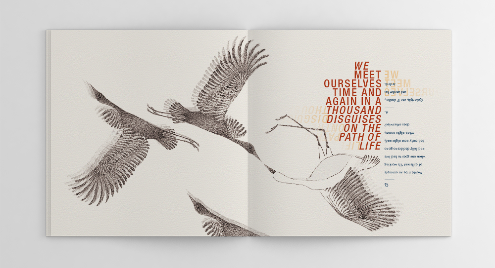
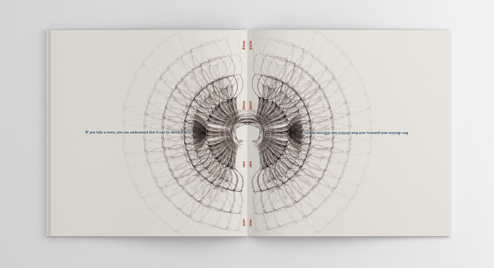
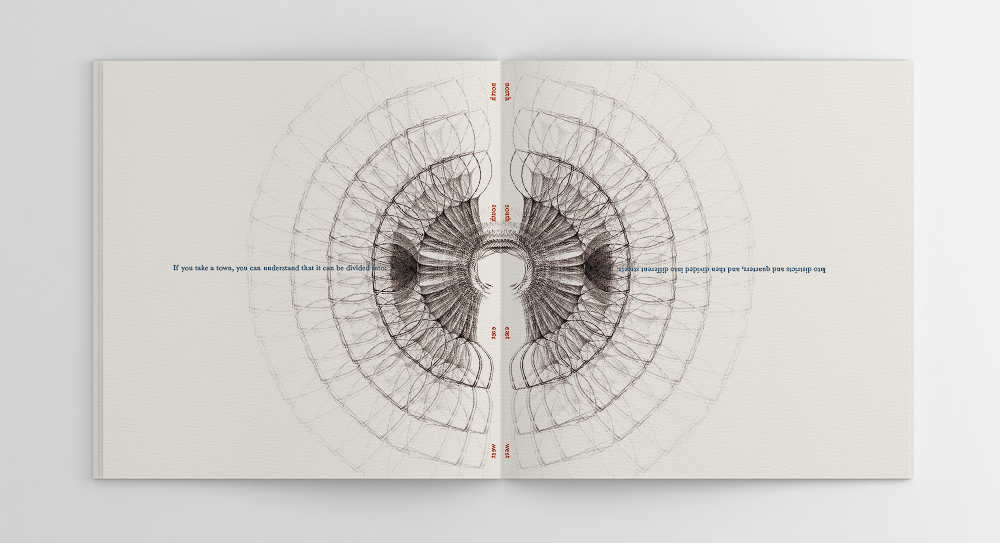

Publication Design: Subselves
Pen Illustrations / Digital Manipulation / Layout

Back & Front Book Cover. Please Note: this book can be read from different angles/orientations to illustrate the voices and perspectives of different selves or authors. Authors quoted include P.D. Ouspensky, Carl Jung, George Gurdgieff and Miller Mair.
Alternate Reading Orientations.
 



Sample Illustration Pages.

Sample Text Page.

Close-up Details. The book was binded by hand using saddle-sewn binding and printed on rives tradition paper.
The 'Subselves' book conceptually visualises the existence of multiple 'I's', perspectives and personalities in individuals, both conscious or unconscious. It draws on the voice of four different authors who have written about the subject. On a personal level, I was interested in reflecting dualities and contradictions I have come to know within myself; a false and true self, light and dark, real and unreal.
To reflect such dualities, I chose to illustrate contrasting states or moods; e.g. a tree in the process of growing vs. dying, or a bubble enclosed vs. bursting open. At times, illustrations and typography come to be duplicated repeatedly to create subtle shadows, thus, signifying the existence of simultaneous selves. Marked contrasts in the dialogues of different authors are achieved by shifting typographical orientation. Jung for instance, can be read right-side up, whilst Ouspensky, upside down. The reader is free to read the book in whichever orientation they wish. In this sense, the reading experience is purposefully disjointed, akin to the disjointed, conflicted and contradictory nature of our own 'subselves' within.